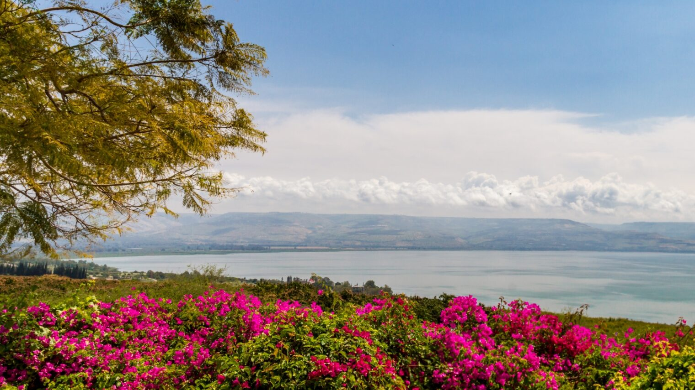

kenert lake
The Sea of Galilee is situated in northeast Israel, between the Golan Heights and the Galilee region, in the Jordan Rift Valley,[6 formed by the separation of the African and Arabian plates. Consequently, the area is subject to earthquakes, and in the past, volcanic activity